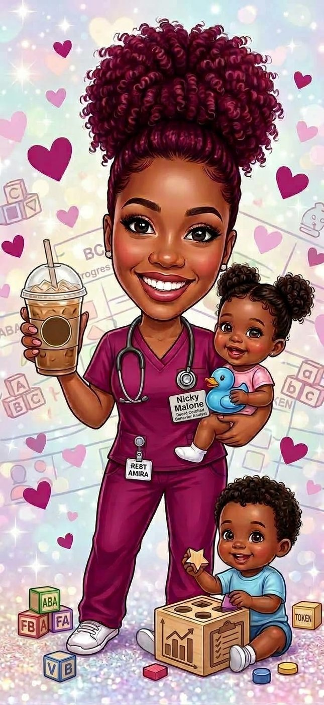

Program Outcomes
Educational Studies Program Outcomes
These pages show how my coursework and my internship connect to the five domains of the Educational Studies program. Start with the Program Overview, then visit each domain.

Program Overview
The program, why I chose it, and my plans after graduation.
Education in Society
How education functions in diverse communities.
Act of Learning
Using theory to design learning.
Identity as an Educator
Ethics, reflection, values, and beliefs in practice.
Communication and Collaboration
Professional communication and partnerships. Coming in Module 15.
Leadership, Advocacy, and Innovation
Sustainable solutions grounded in social justice. Coming in Module 15.